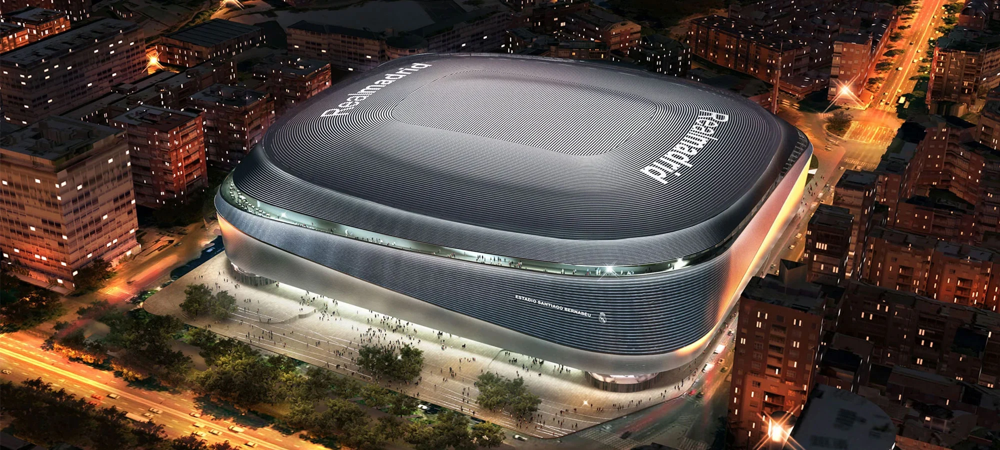
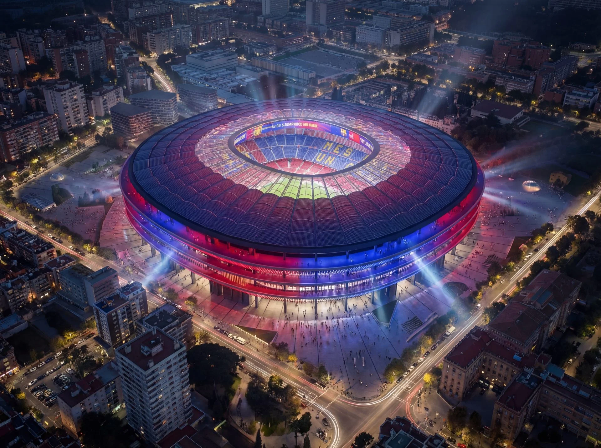
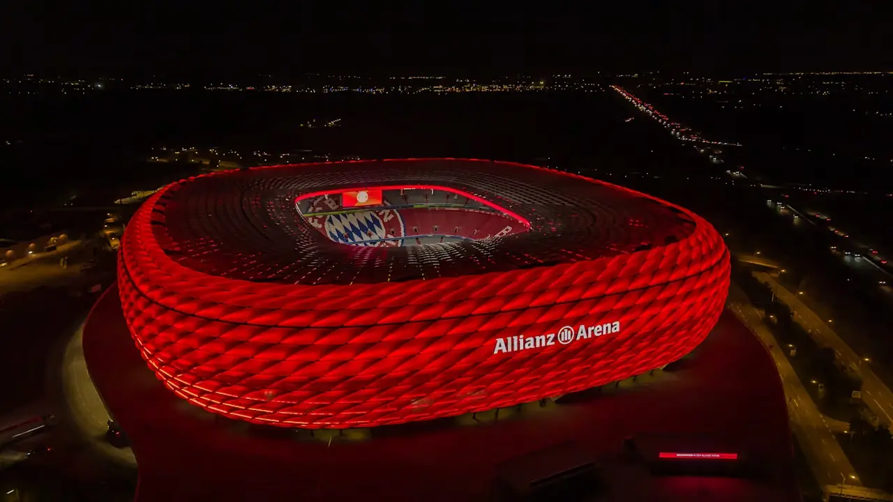
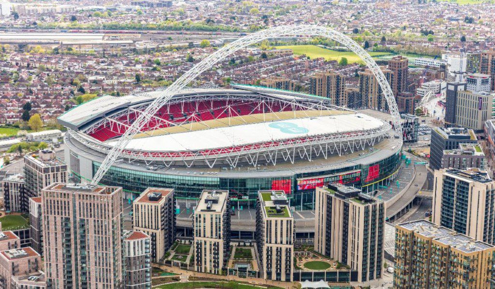
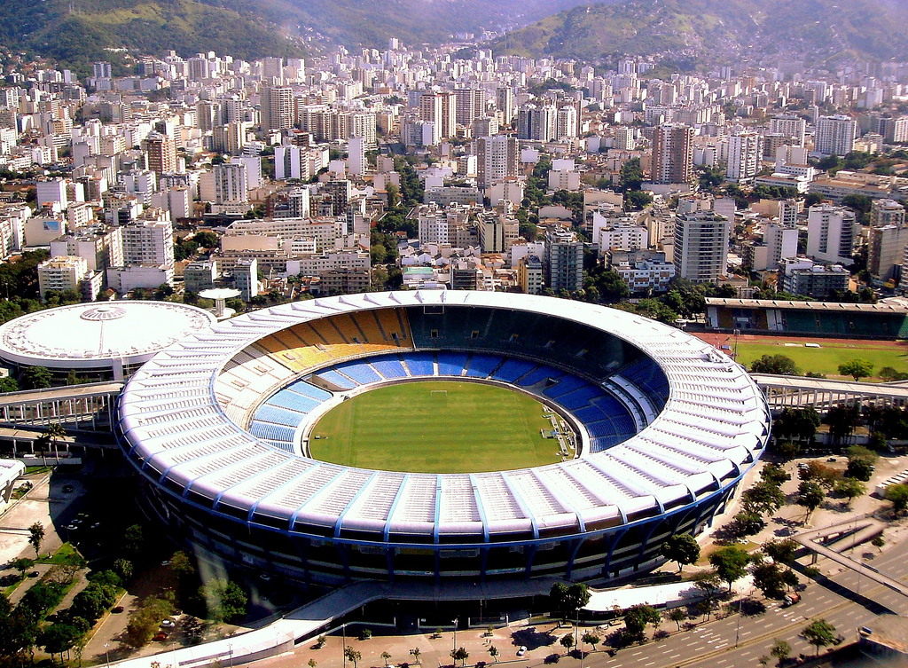
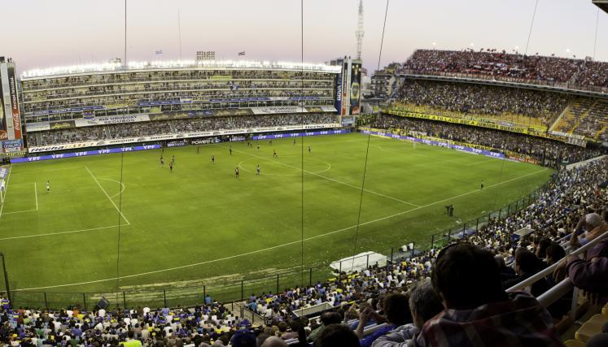
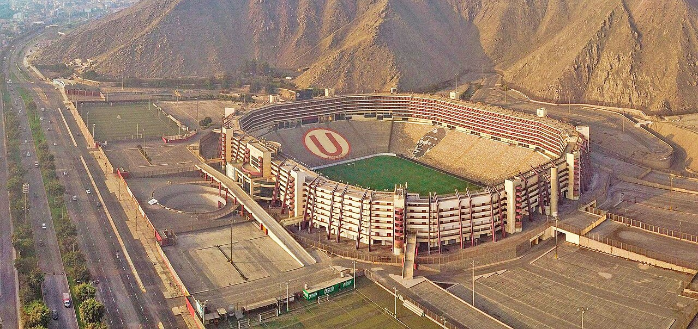
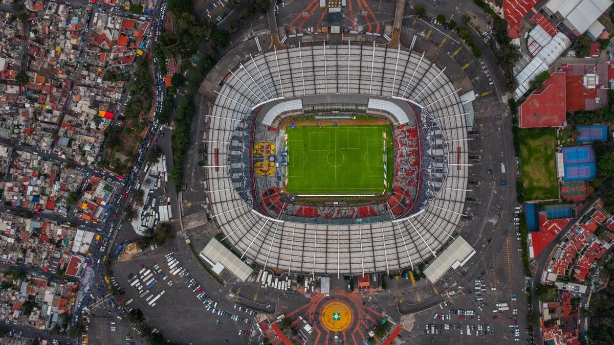

A continuación veremos los estadios más imponentes y respetados de toda latinoamerica y europa.
El Estadio Santiago Bernabéu es uno de los recintos deportivos más emblemáticos del mundo y la sede del Real Madrid Club de Fútbol,
ubicado en el distrito de Chamartín, en el Paseo de la Castellana de Madrid, España. Inaugurado en 1947 y completamente renovado en la década de 2020,
combina historia futbolística con una arquitectura futurista que lo ha convertido en un símbolo de la ciudad y del deporte mundia

El Camp Nou (actualmente Spotify Camp Nou) es el estadio histórico del club FC Barcelona, situado en el barrio de Les Corts,
Barcelona, España. Inaugurado en 1957, es el recinto deportivo más grande de Europa y un símbolo del fútbol mundial. Desde 2022 está
en renovación integral dentro del proyecto Espai Barça.

La Allianz Arena es un estadio de fútbol situado en el distrito de Fröttmaning,
al norte de Múnich, Alemania. Inaugurado en 2005, es la sede del FC Bayern Munich y uno de
los recintos deportivos más modernos del mundo, célebre por su fachada iluminada de paneles
inflables que puede cambiar de color. Es un símbolo arquitectónico y turístico de la ciudad bávara.

El Wembley Stadium es el estadio nacional de fútbol de Inglaterra y uno de los recintos
deportivos y de espectáculos más reconocidos del mundo. Situado en Wembley, al noroeste de Londres
, es la sede de la selección inglesa de fútbol y de eventos como la final de la FA Cup, conciertos
de talla mundial y partidos de la NFL. Su icónico arco blanco de 133 m de altura lo convierte en un
símbolo visible del skyline londinense

Maracanã es un emblemático complejo deportivo y barrio en la zona norte de Río de Janeiro
, Brasil. Es célebre mundialmente por el Estadio Maracaná, considerado un templo del fútbol y símbolo
de la cultura brasileña. El área combina historia deportiva, vida urbana y patrimonio arquitectónico.

La Bombonera es el estadio principal del club de fútbol Boca Juniors,
ubicado en el barrio de La Boca, en Buenos Aires, Argentina. Es uno de los estadios más
emblemáticos del mundo, conocido por su arquitectura singular y la intensidad del ambiente durante los partidos.

El Estadio Monumental (también conocido como Estadio Monumental “U”)
es un estadio de fútbol ubicado en el distrito de Ate, en Lima, Perú. Es la sede principal del club
Club Universitario de Deportes y uno de los recintos deportivos más grandes de Sudamérica, reconocido
por su capacidad y moderna infraestructura.

El Estadio Azteca es un emblemático recinto deportivo situado en Ciudad de México.
Inaugurado en 1966, es uno de los estadios más grandes y reconocidos del mundo y un símbolo cultural del
fútbol latinoamericano. Alberga los partidos del Club América y de la Selección Nacional de México, además
de grandes eventos internacionales.
